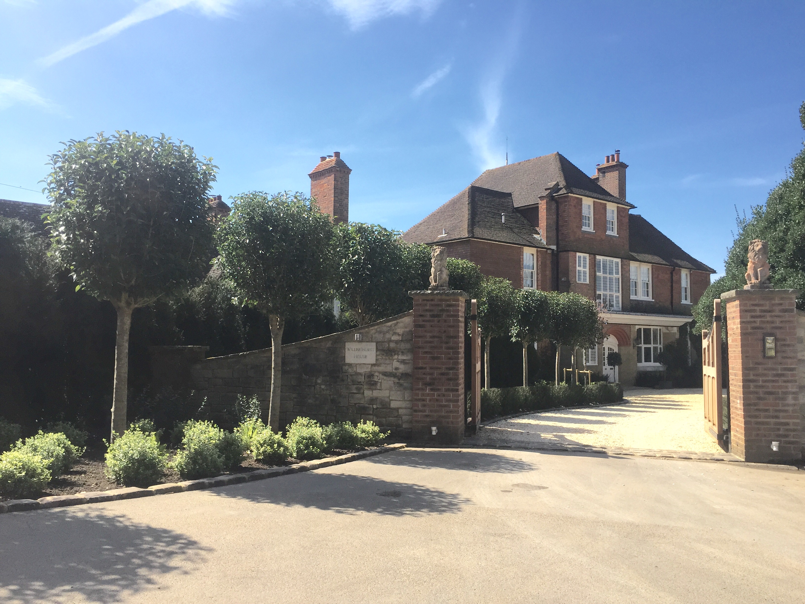
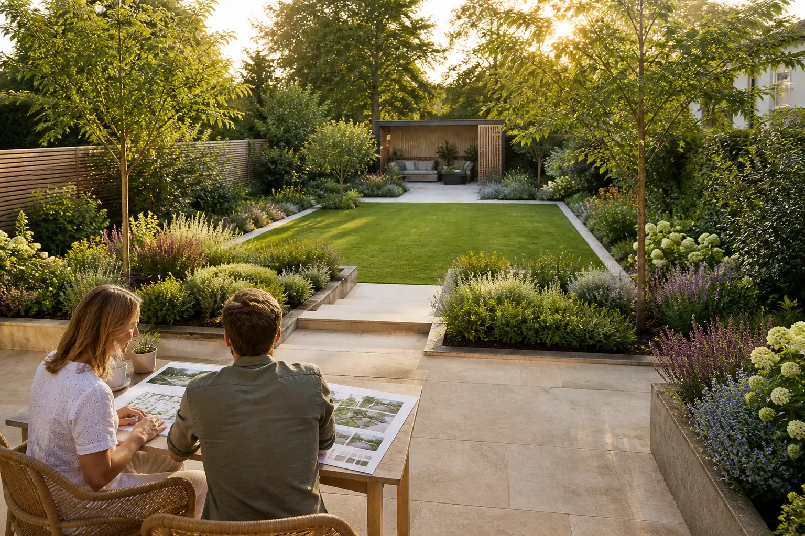
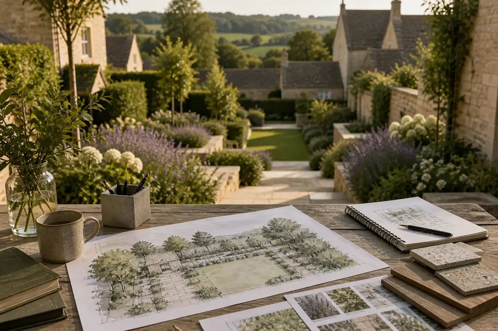
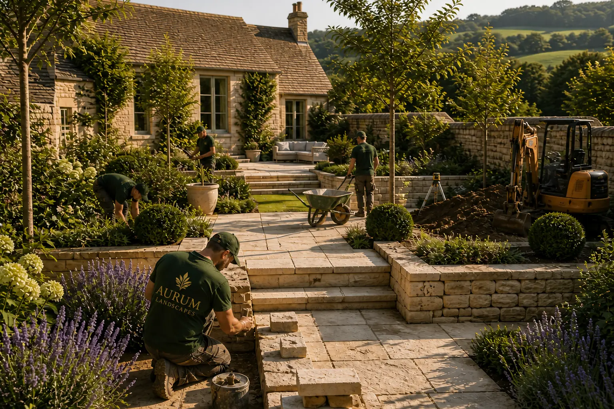
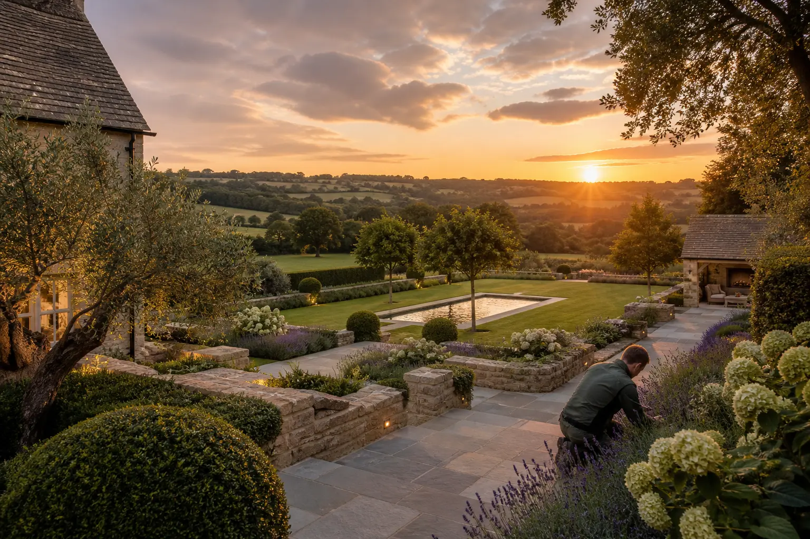

The Process
Creating a luxury garden is an art form. At Aurum Landscapes, our refined design and build process ensures that every project is executed flawlessly, delivering landscapes that are as functional as they are breathtaking.
Step 1: Consultation & Concept
Every project begins with a personal consultation. We take the time to understand your vision, lifestyle, and the architectural character of your property. Our team will assess the site and discuss the possibilities, ensuring a bespoke approach.


Step 2: Design & Planning
Our award-winning landscape architects craft a detailed design plan, incorporating bespoke planting schemes, structural elements, and luxury features. From formal gardens to contemporary retreats, we tailor every detail to your tastes.
Step 3: Construction & Installation
With meticulous project management, we bring the design to life. Our skilled craftsmen, horticulturists, and stonemasons work with the finest materials to ensure unparalleled quality.


Step 4: Finishing Touches & Maintenance
We refine every detail to perfection, ensuring that your new landscape is immaculate. Our team also provides exclusive garden management services, ensuring that your estate remains pristine year-round.
Your dream garden begins with a conversation. Contact us to begin the journey...